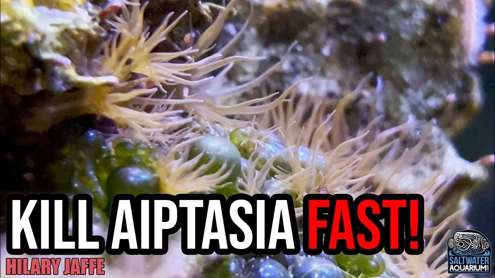

Friday, October 30, 2026 · 29 items · back issues
Howdy, it's Isaac again.
Happy Friday, reefing family, and welcome back to my Weekly Dive.
Here are the biggest things worth knowing:
- Cumulative thermal stress predicts functional change in coral reef fish communities
- Marine heat waves in vulnerable coral reef regions are skillfully predictable on multi-year timescales
- Fisheries are becoming increasingly indiscriminate – they catch an estimate of 29 million seahorses a year…
- Why might corals settle on Lithophyllum prototypum? A hypothesis linking non-geniculate coralline algal architecture to coral recruitment
- Plus 25 more across husbandry & science, wild reefs, community
Let's dive into the news touching our hobby…
Community5
-
Everything You Should Know About ICP Testing
Tidal Gardens explains ICP testing for trace-element dosing in reef tanks. ICP measurement directly determines which additives reef keepers actually need, avoiding unnecessary supplementation.
19 min Tidal Gardens · Oct 29 · youtube.com
-
Building a 650-Gallon Peninsula Reef | WWC Custom Aquarium Install
World Wide Corals documents a 650-gallon custom aquarium build with large-tank circulation solutions and remote water mixing. The video covers practical engineering for long tanks, dead-zone mitigation, and equipment selection.
15 min World Wide Corals · Oct 29 · youtube.com
-
AFERIY P180 Review: 31+ Hours of Reef Tank Backup Power From a 1 kWh Power Station
A 1 kWh LiFePO4 power station kept a reef tank running 31+ hours during a power outage in real-world testing. This is actionable data for emergency backup planning in system design.
Reefs.com · danireef · Oct 26 · reefs.com
-
Inside a German Saltwater LFS! Low-Maintenance Reefing & Simple Coral Care with Mr. Saltwater Tank
A tour of a German reef shop showcases low-tech soft-coral husbandry without heavy testing, emphasizing natural aquascaping and regional differences in LFS practice. European and North American approaches offer comparative perspective on tank setup philosophy.
9 min SaltwaterAquarium.com · SaltwaterAquarium · Oct 27 · youtube.com
-
Chainlink Moray Eel Care & More | Echidna catenata
The Chainlink Moray Eel is a moderately sized, banded moray suitable for experienced aquarists in larger tanks. Moray husbandry details help keepers choose and care for this striking centerpiece fish.
Reefs.com · Marijke Puts · Oct 28 · reefs.com
Husbandry & Science6
-
Why might corals settle on Lithophyllum prototypum? A hypothesis linking non-geniculate coralline algal architecture to coral recruitment
Non-geniculate coralline algae in the Lithophyllum prototypum complex consistently trigger high coral larval settlement, but the mechanism remains unclear. Surface architecture may play an underappreciated role alongside chemical and microbial settlement cues.
+1 similar Frontiers in Marine Science — Journal · Renato C. Pereira · Oct 27 · frontiersin.org
-
Decoding the metagenome of the precious red coral: discovery of a new spirochete lineage and carotenoid-producing bacteria
Metagenomic analysis of precious red coral reveals 25 bacterial genomes including a new spirochete lineage and carotenoid-producing symbionts. Understanding coral microbiota function deepens knowledge of what keeps corals alive.
Microbiome · R. Tignat-Perrier et al. · Oct 26 · doi.org
-
Culture and Isolation of Bacteria Associated with Mediterranean Corals
A review argues culturable bacterial methods are essential alongside molecular techniques to understand coral holobiont dynamics. Classical microbiology reveals coral symbiont behavior that sequencing alone cannot.
Microbial Ecology · Rocio Mozo et al. · Oct 26 · doi.org
-
Quantifying surgeonfish functions in coral reef sediment dynamics: an ecological and evolutionary perspective
Phylogenetic study quantifying surgeonfish roles in coral reef sediment dynamics across evolutionary time. Advances understanding of how a key reef-fish family shapes reef structure and function.
Reviews in Fish Biology and Fisheries · Isabelle Ng et al. · Oct 24 · doi.org
-
Microbial Community Structure and Predicted Functional Potential Across Environmental Gradients Influenced by Submarine Groundwater Discharge in Tropical Coral Reef Intertidal Sediments
Submarine groundwater discharge through coral reef sediments introduces nutrient gradients that reshape benthic microbial communities and their metabolic function. Understanding these geochemical influences on reef microbiota is relevant to nutrient cycling in reef systems.
Journal of Marine Science and Engineering · Feng‐Yu Wang et al. · Oct 27 · doi.org
-
Hypersalinity and environmentally relevant perfluorohexanesulfonic acid independently and interactively impair survival and development in early life stage red drum (Sciaenops ocellatus)
Hypersalinity and perfluorohexanesulfonic acid (a PFAS contaminant) individually and together impair survival and development in red drum larvae. Estuarine fish nurseries face converging stressors from drought and industrial contamination that interact unpredictably.
Frontiers in Marine Science — Journal · Kristin Nielsen · Oct 27 · frontiersin.org
Livestock & Corals2
-
Fisheries are becoming increasingly indiscriminate – they catch an estimate of 29 million seahorses a year…
Fisheries catch an estimated 29 million seahorses annually with minimal protection for this data-poor species. Seahorses are stocked in marine aquarium trade; understanding wild-population pressure informs sourcing and conservation.
Project Seahorse — Bluesky · Oct 29 · bsky.app
-
Diversity of azooxanthellate scleractinian corals collected off western Kyushu during cruise GB24
A survey off western Kyushu documents azooxanthellate scleractinian coral diversity collected during a research cruise. Deep-water and non-symbiotic corals expand understanding of coral distribution and physiology.
BULLETIN OF THE GEOLOGICAL SURVEY OF JAPAN · Yuki Tokuda et al. · Oct 27 · doi.org
Wild Reefs14
-
Cumulative thermal stress predicts functional change in coral reef fish communities
Marine heatwaves shift coral reef fish communities toward herbivores at the expense of corallivores, altering functional composition that reef resilience depends on. A Bayesian model across multiple species and locations provides predictive insight into how thermal stress reorganizes fish communities.
Proceedings of the Royal Society B Biological Sciences · Anthony C. Markey et al. · Oct 28 · doi.org
-
Marine heat waves in vulnerable coral reef regions are skillfully predictable on multi-year timescales
Marine heatwave frequency and intensity in coral reef regions are predictable on multi-year timescales using Earth system models, with skill varying by region. Extended forecasting could enable proactive reef management and conservation planning.
Nature Communications · Alexia Karwat et al. · Oct 27 · doi.org
-
Implications of hardbottom sponge community decline for ecosystem function in the Florida Keys, Florida (USA)
Florida Keys hardbottom sponge communities have declined, threatening reef ecosystem function. Understanding reef-system collapse informs conservation priorities and baseline knowledge for coral-reef biology.
Frontiers in Marine Science — Journal · Mark J. Butler · Oct 30 · frontiersin.org
-
Seasonality and the effect of a marine heatwave on the metabolism of Red Sea coral reefs
A new study examines how Red Sea coral metabolism responds to seasonal cycles and marine heatwaves. Understanding metabolic rates under thermal stress is essential for predicting how corals will fare in warming oceans.
Scientific Reports · Vincent Saderne et al. · Oct 28 · doi.org
-
Generating blue carbon credits through conservation of Posidonia oceanica: experience from the LIFE SeaForest project
LIFE SeaForest project develops accounting frameworks for blue-carbon credits through Posidonia oceanica conservation in the Mediterranean. Seagrass meadow carbon storage and degradation dynamics inform reef-adjacent ecosystem management and conservation valuation.
Frontiers in Marine Science — Journal · Marco Marcelli · Oct 29 · frontiersin.org
-
Density patterns and age structure of the queen conch ( Aliger gigas ) in a coral reef lagoon in the Mexican Caribbean
Queen conch populations in a Mexican Caribbean lagoon show recovery during and after a 5-year fishing closure, with density and age structure tracked across reefs. Population response to protection measures informs management of this overexploited Caribbean resource.
PeerJ · Isvi Areli Benítez-Castillo et al. · Oct 27 · doi.org
-
“Our findings show why fisheries managers need to consider more than temperature alone,” William Cheung…
UBC researcher William Cheung finds fisheries must consider multiple environmental extremes beyond temperature alone. Knowledge of how environmental stressors interact helps predict reef-ecosystem responses and fisheries impacts on reef communities.
UBC Oceans — Bluesky · Oct 29 · bsky.app
-
Contribución de la ictiofauna arrecifal a los servicios ecosistémicos del Sistema Arrecifal Mesoamericano
A study quantifies how reef fish species in the Mesoamerican Reef contribute to ecosystem services including fisheries, coastal protection, and nutrient cycling. Assigning ecological value species-by-species helps prioritize conservation in a degraded reef system.
Revista de Biología Tropical · Bárbara Velázquez-Rivera et al. · Oct 27 · doi.org
-
Reassessing carbon sink fisheries: biogeochemical constraints and ecological-economic-social coupling and governance
Review reassesses carbon-sink fisheries and aquaculture through ecological and carbon-cycling frameworks. Understanding how seaweed and bivalve farming affect marine carbon pathways informs reef conservation and ecosystem dynamics.
Frontiers in Marine Science — Journal · Xi Hu · Oct 30 · frontiersin.org
-
Traditional Owner knowledge is helping shape the next chapter of marine research on WA’s south coast
Indigenous knowledge is informing marine surveys in Western Australian protected areas alongside kelp forests, seagrass, and marine mammals. Integration of Traditional Owner expertise with scientific research strengthens reef and coastal ecosystem assessment.
Great Southern Reef Foundation — Bluesky · Oct 26 · bsky.app
-
Observed Spectral-Reflectance Zoning for Model Selection in Satellite-Derived Bathymetry of Heterogeneous Coral Reef Waters Using ICESat-2 and Sentinel-2
Satellite bathymetry using ICESat-2 and Sentinel-2 improves mapping of shallow coral reef topography by accounting for spectral heterogeneity. Better reef surveying tools support conservation and ecosystem assessment.
Journal of Marine Science and Engineering · Yuan Le et al. · Oct 26 · doi.org
-
The #Arctic workshop at #PICES2026 was today
A PICES workshop examined Arctic climate impacts including sea ice loss and ocean acidification affecting fisheries and Indigenous communities. Ocean acidification is reef-relevant, though the Arctic context is distant from tropical reefs.
Ocean Acidification Research Center — Bluesky · Oct 26 · bsky.app
-
An innovative approach to tackling the marine conservation problem of "ghost gear" is gaining acceptance in…
Canada develops new permitting pathways for ghost-gear removal as marine-habitat offset. Ghost fishing impacts reef ecosystems; understanding removal as conservation credit advances reef restoration frameworks.
UBC Oceans — Bluesky · Oct 29 · bsky.app
-
Subsidies that fuel overfishing and damage coral reefs and mangroves are costing governments and societies…
Fishing subsidies cost governments far more in environmental damage than they spend, harming coral reefs and mangroves. The economics are dense, but the scale of subsidy-driven reef destruction is worth tracking.
UBC Oceans — Bluesky · Oct 26 · bsky.app
Events1
-
The dolphins greeted us at 7am sharp yesterday morning to help us launch the first Miami Coral Club meeting…
First Miami Coral Club meeting held successfully with next meeting scheduled for November 19. Local reef hobby meetup announcement.
Coral City Camera — Bluesky · Oct 23 · bsky.app
Resource

How to Get Rid of Aiptasia FAST: Berghia Nudibranch Guide & Review | Hilary JaffeVideo guide to using Berghia nudibranchs for biological Aiptasia control, covering sourcing, acclimation, and tank-size dosing. Practical husbandry for a common reef problem.
9 min SaltwaterAquarium.com · SaltwaterAquarium · Oct 24 · youtube.com
Get it in your inbox
One email a week, free. Every item links to its source.
Prefer a feed reader? Follow along by RSS.